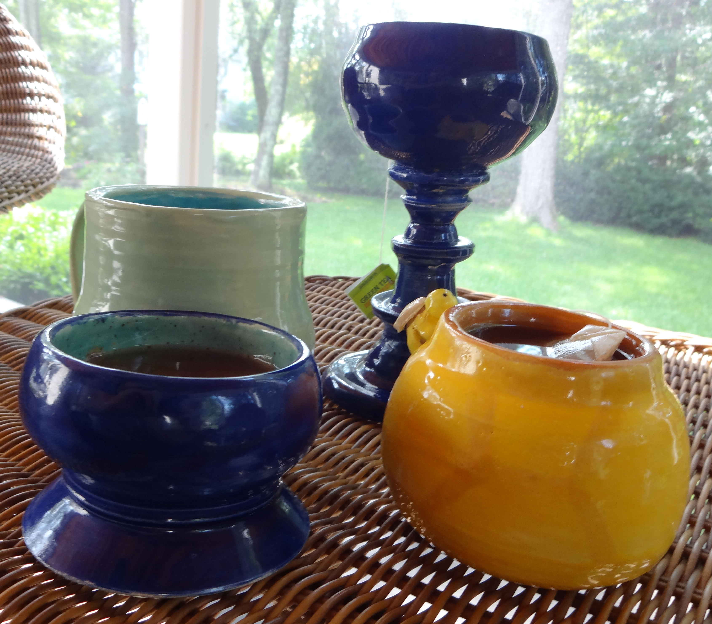
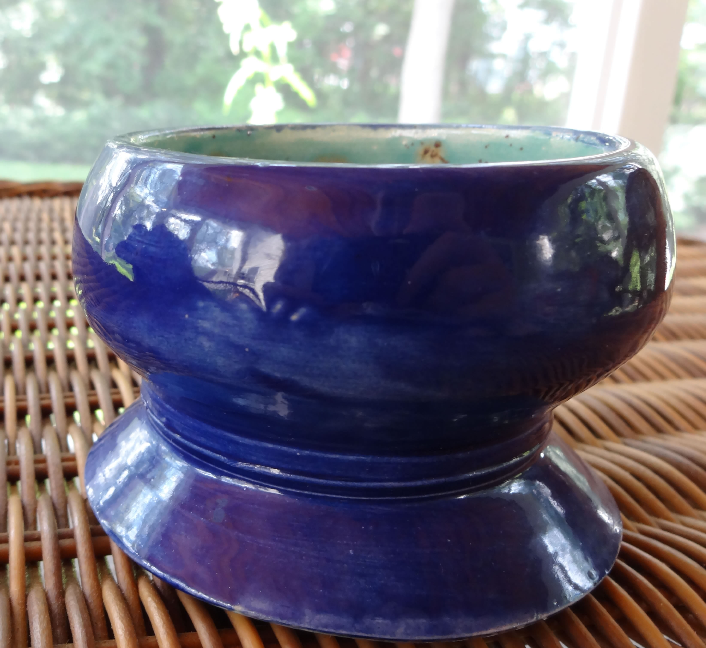
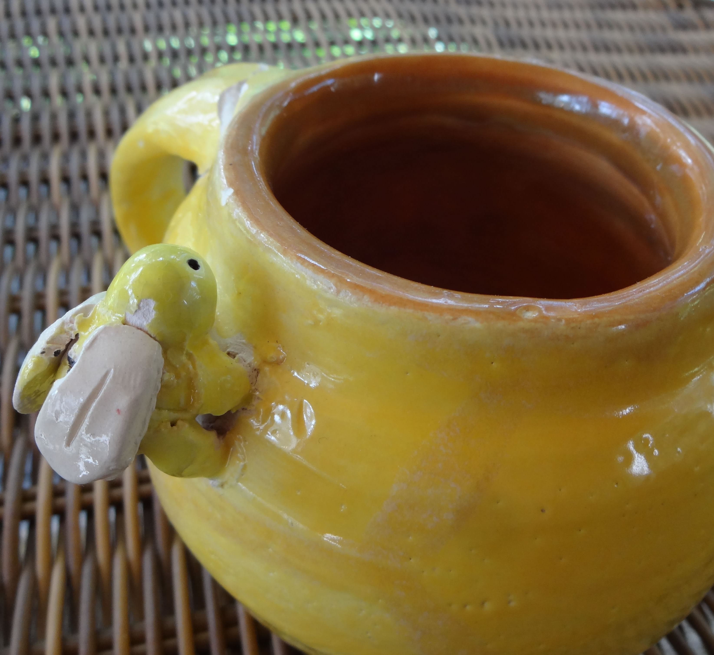
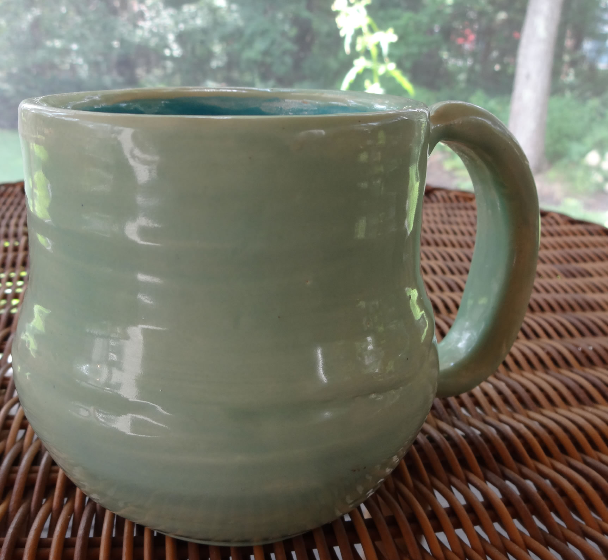
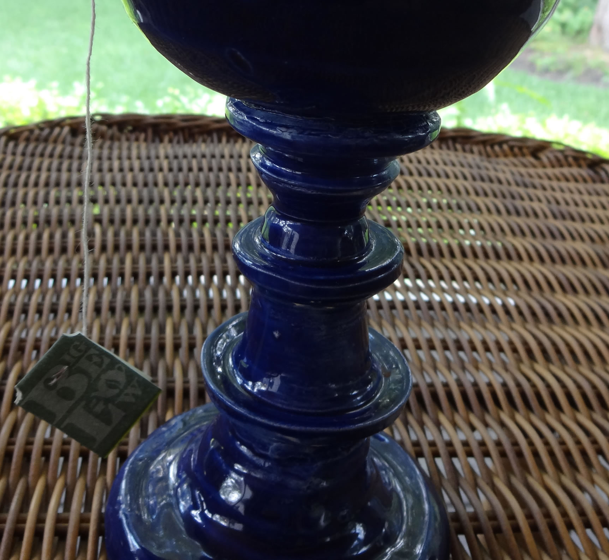

 
 
Making Mugs
In an attempt to expand my ceramic and 3D skills, I opted to take a wheel throwing class while I was at a summer camp. The class was directed by lovely woman who was a ceramics major and made and thrown- pottery for a living.
With her instruction I learned how to throw pottery on the wheel, and while not included I had also thrown a bowl and a plate. I learned the whole process from start to finish and learned techniques to help me trim my pieces and to shape them with ease.
The mugs each have their own importance and backstory- with the one I'm the most proud of being the tall chalice. The shorter deep blue mug was the first trial of the much taller mug, and was inspired by a cup I had seen with a stem. The shorter one was made as one piece, and was essentially a very shallow bowl that was trimmed to give it the much more fun shape. The taller chalice was actually two pieces that were then slipped together, and is what I think I'm the most proud of.
The other two mugs, the yellow honeycomb bee mug and the seafoam mug, were attempts to create mugs that were fun and functional. The bee mug was my first attempt at a mug, and while it has many mistakes and sadly has even cracked after an accident it is one of my favorites. The mug, while very well- centered and smooth, is sadly too shallow to be very functional; it cannot hold very much inside of it and is better suited to not be used to hold tea or coffee but instead as a cup to hold other small items.
The glaze on the mug is sadly also not as ideal, since there was supposed to be a honeycomb patterb on the mug, but the darker glaze was too pale and didn't show up or can only be seen on closer inspection.
The final mug was just an attempt to make a large and functional mug.